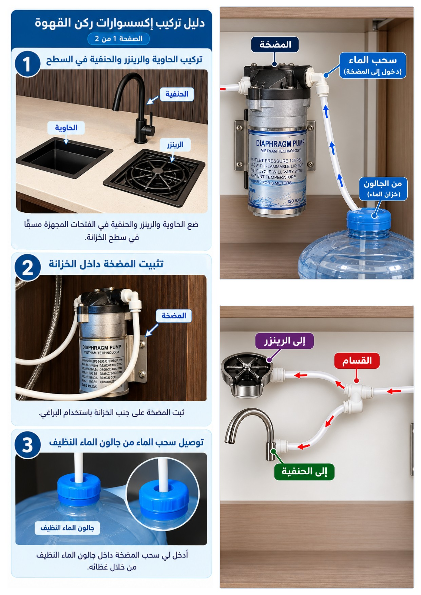

1 فيديو تركيب المضخة
2 دليل تركيب إكسسوارات ركن القهوة

📄 فتح الدليل (PDF) ⬇ تحميل الدليلتعليمات الاستخدام للحفاظ على عمر المضخة
- لا تترك مصدر الماء يقل عن ربع الخزان لتفادي دخول الهواء.
- تجنّب استخدام مياه ساخنة أو غير نظيفة.
- يُفضّل فصل الكهرباء في حال عدم الاستخدام لفترات طويلة.
- لا تترك المضخة تعمل بدون ماء.
الضمان
- ضمان الوكيل غير متوفر بسبب التعديل.
- متوفر فيها ضمان المتجر لمدة 6 شهور لحساس الضغط (الكسر / سوء الاستخدام غير مشمول).
- ملاحظة: ضمان الوكيل غير متوفر.